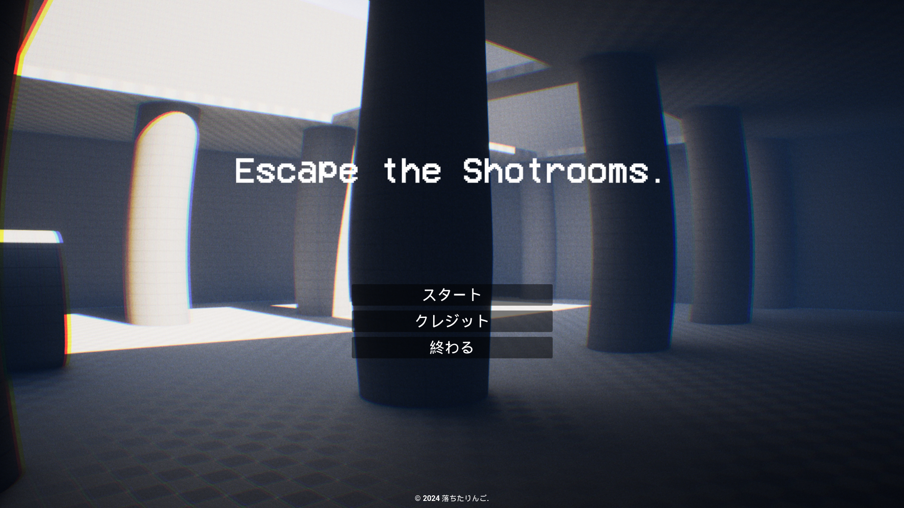
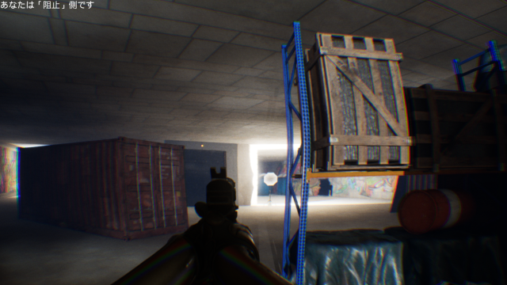
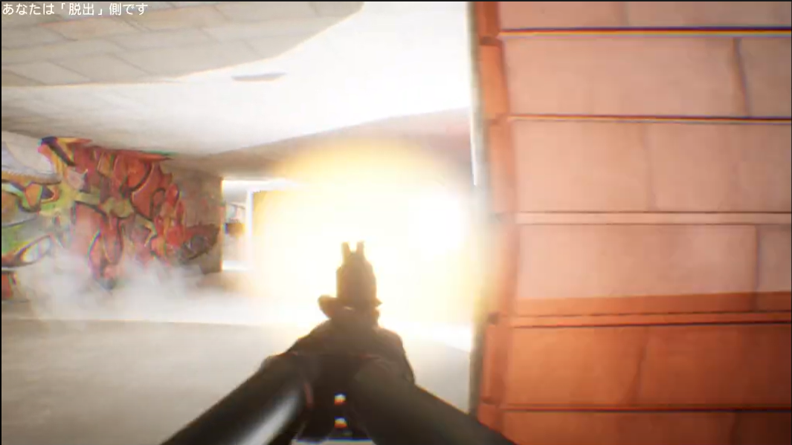
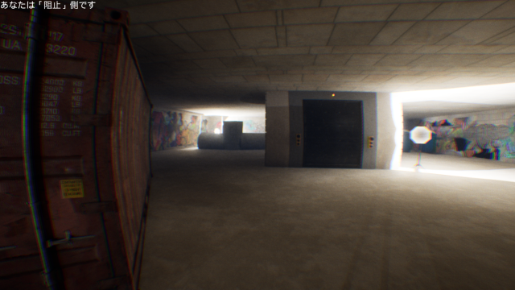
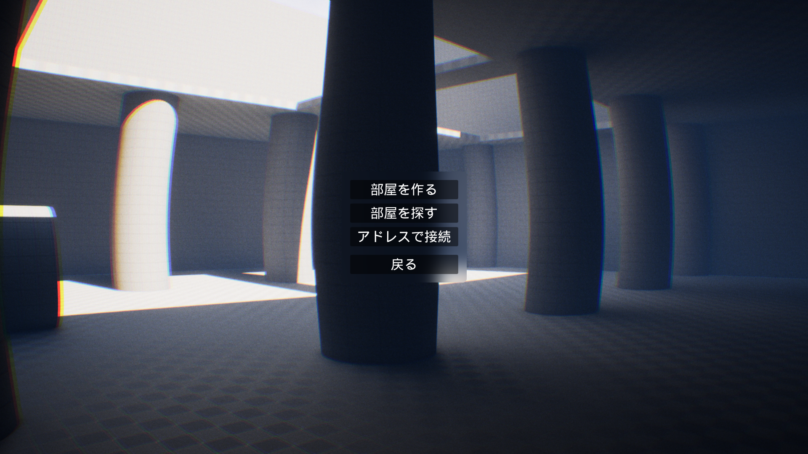
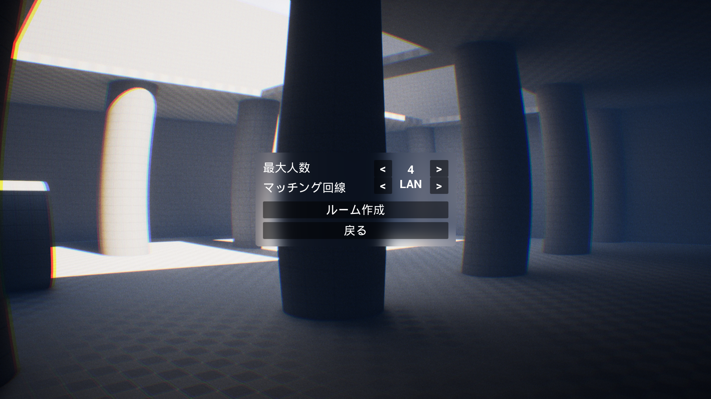
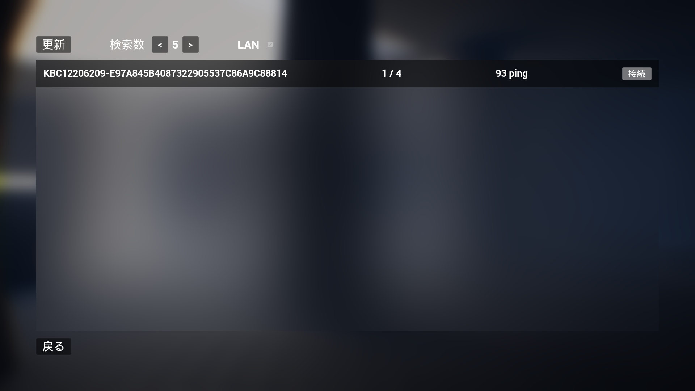
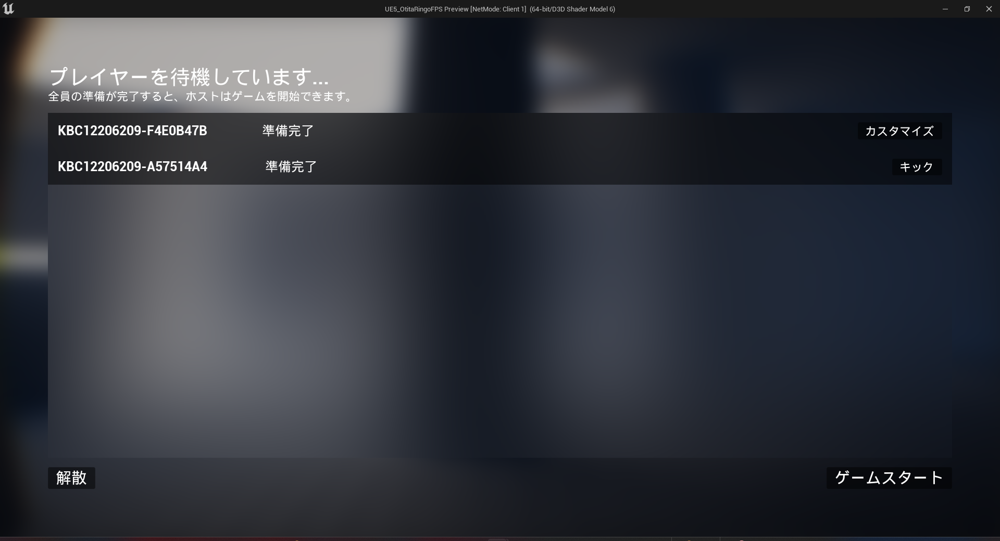
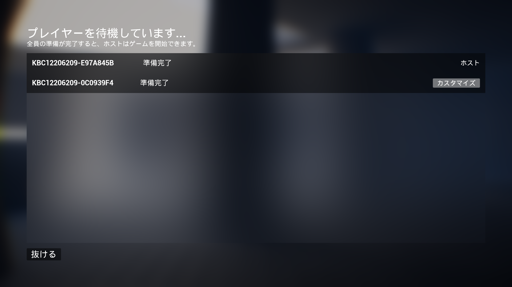
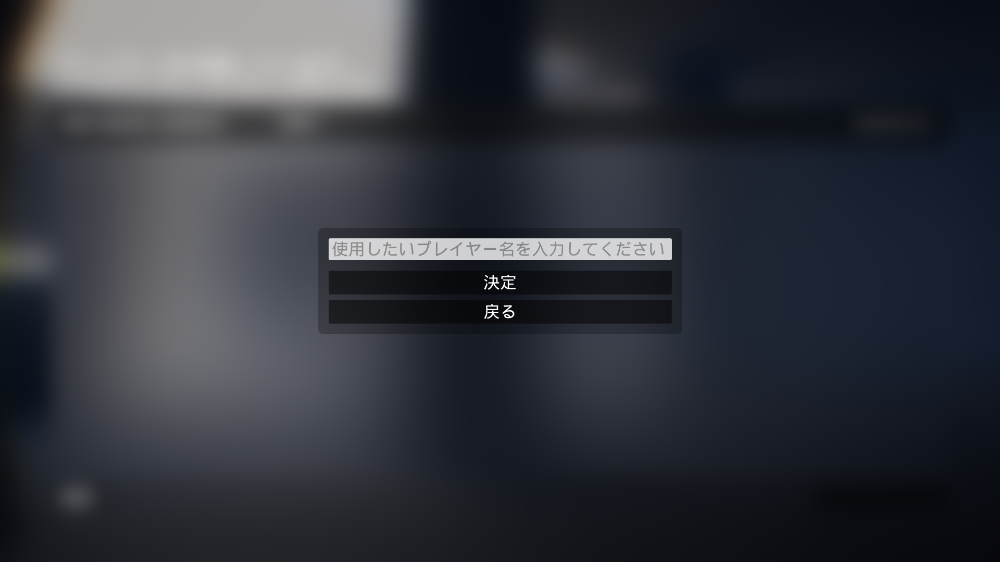

作品について
作品概要
このゲームは、クラスメイトでチームを組んで開発を行う「チーム制作」の３年春季制作で作りました。
リミナルスペースを参考にしたFPSの脱出ゲームとなっており、
私はこのゲームの主にゲームシーケンス、全ての画面とUIの開発を担当しました。
また、サポートで他の部分（プレイヤーなど）も実装しました。
作品概要２
・ゲームジャンル
FPS
・開発環境 / 使用言語
Unreal Engine 5.1.1 / Blueprint
・制作期間
約２か月
・制作人数
２名
・担当箇所
ゲームシーケンス、全ての画面とUI
・プレイ動画URL
動画
制作背景
Unreal Engine 5 といったゲームエンジンやツールを扱うスキルの向上と、TGS（東京ゲームショー）への出展を目指して制作を行いました。
挑戦したこと
・GameModeやPlayerState、HUDなどあまり触った事がないクラスも積極的に使用しました。
・ネットワークマルチプレイに対応させました。
・積極的に担当外のタスクもサポートしました。
学んだこと
UE上の各クラスがなんのために存在するか、どのように使えばいいか学びなおすことが多くありました。
また、その学びにおいて設計の大切さ、基礎を疎かにしてはならない理由も学びました。
こだわった（工夫）したところ
工夫１
プレイヤーの視点に色収差や広角レンズのビジュアルエフェクトを設定
不気味な雰囲気を感じさせるステージ設計
ステージに、壊すことができる照明といったギミックを配置

');">
プレイヤーの視点に、色収差や広角レンズのような見え方にすることができるビジュアルエフェクトなどを取り入れ、ゲームの雰囲気作りにこだわりました。
また、ステージの雰囲気もできるだけ不気味な空気にし、壊すことが出来る照明などギミックも配置しました。
工夫２
ゲームの雰囲気を壊さないUIの実装
できるだけ直感的にわかりやすいインターフェースの設計

');">
');">
');">
UIにはすりガラスのようなブラーエフェクトなど、最近のUI/UXデザインンのトレンドを参考にゲームの雰囲気を壊さないようこだわりました。
趣味のWebアプリ開発で学んだUIの作り方を活かし、説明を見なくても直感的に操作できる設計を意識して実装しました。
工夫３
カスタマイズ要素としてプレイヤー名を設定できるように実装
キック機能を実装

');">
');">
');">
ゲーム内のプレイヤー名を設定できるようにし、知らない誰かが乱入するのを防止するためキック機能を実装しました。
また、ゲーム開始後の合流はできないようにするなど色々なリスクを想定、意識して実装しました。
また現在行っているブラッシュアップではパスワード機能を新たに実装中です。